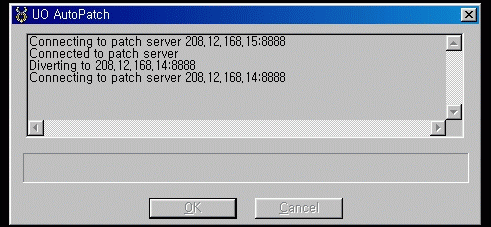
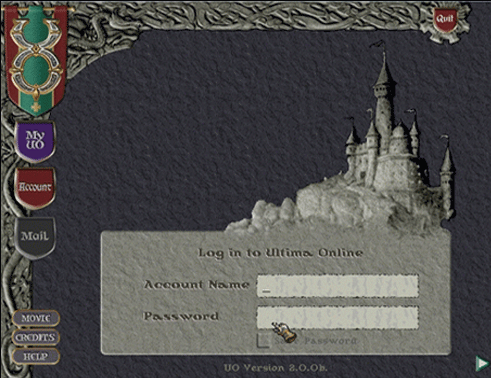

|
울티마 온라인 패치를 받자
|
|

패치를 받는 장면입니다.
패치를 받는데는 속도에 따라 약간의 차이가 있기는 하지만, 10~15정도의시간이 소요됩니다.. |
|

정상적으로 패치가 되었다면 패치가 완료되면서
로그인 화면이 뜰것입니다.
만약 패치가 되다가 멈췄을 경우 2~3회 다시 패치를 시도해보고 안된다면 다시 인스톨후 패치하시기 바랍니다.. |